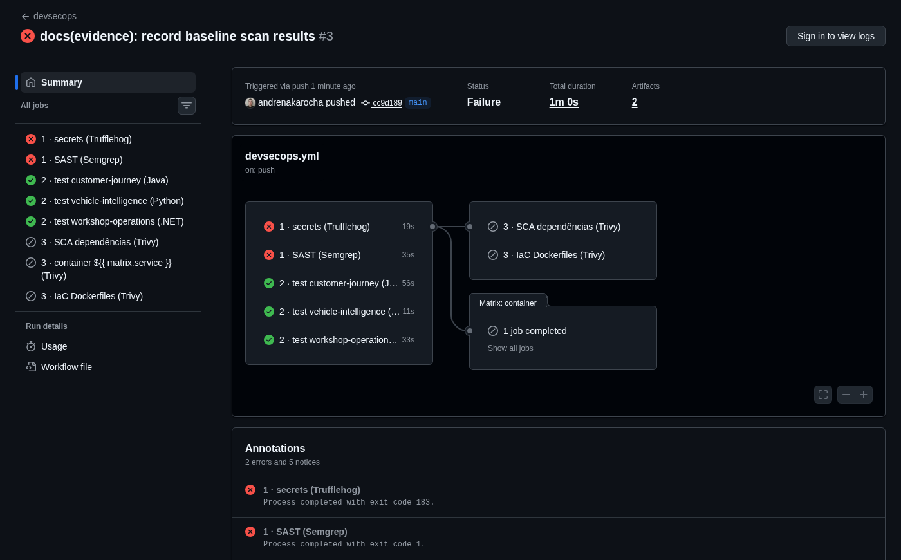
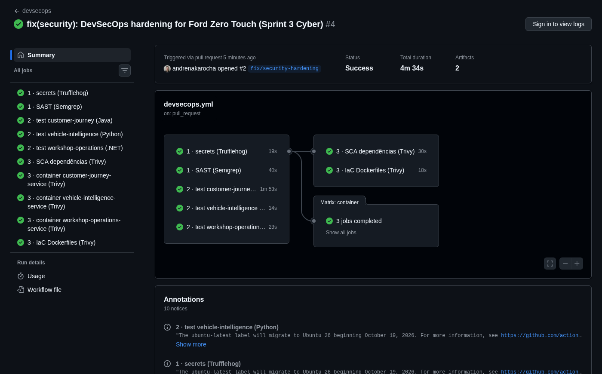

Pipeline com Semgrep e Trufflehog, correções reais no código, trilha de auditoria com resposta a incidentes e mapeamento OWASP da solução de pós-venda (API, mobile, IoT e ML).
Nesta sprint a segurança deixou de ser um documento e passou a rodar junto com o código. Partimos do código real da solução (os microsserviços entregues em SOA nesta sprint), colocamos um pipeline DevSecOps para varrê-lo, corrigimos o que ele encontrou, instrumentamos a trilha de auditoria que alimenta os alertas e mapeamos os riscos residuais contra os padrões OWASP.
O Ford Zero Touch aumenta o VIN Share tirando o atrito do pós-venda: o veículo envia telemetria (OBD-II), um modelo de risco decide quando recomendar manutenção e a concessionária conduz a jornada até a ordem de serviço. O cliente acompanha tudo pelo app Pitlane.
| Etapa (peso) | O que entregamos | Evidência |
|---|---|---|
| 1. Pipeline DevSecOps & análise de código (3,0) | Pipeline no GitHub Actions com Semgrep (rulesets públicos + 10 regras próprias) e Trufflehog (histórico completo) como gates; pre-commit local; pesquisa e jobs de SCA e Container Security (Trivy). | .github/workflows/devsecops.yml, .semgrep/, docs/evidence/ |
| 2. Segurança em código e infraestrutura (2,5) | Criptografia local AES-256-GCM, hardening de API (superfície, rate limit, bloqueio de conta, validação), JWT endurecido nos três serviços, RBAC com autorização por objeto (BOLA). | 12 commits de correção + testes; simulate-attacks.sh |
| 3. Logs, alertas e resposta a incidentes (2,0) | Trilha security.audit padronizada nos três serviços e no gateway, correlação por request_id, regras de alerta para API, mobile, IoT e ML e playbooks SANS PICERL. | docs/evidence/after/logs/ |
| 4. Pesquisa de vulnerabilidades (OWASP) (2,5) | Matrizes OWASP Top 10:2025, API Security Top 10:2023, Mobile Top 10:2024 (sobre o código real do app) e ASVS 5.0 nível 2, com análise de risco e plano de mitigação. | Seção 4 e docs/evidence/mobile/ |
Ponto de partida honesto. O código base é o dos microsserviços de SOA da Sprint 3 (commit e80f10a), importado sem alterações no primeiro commit do repositório (b7ac674). Os componentes de segurança da nossa entrega de SOA + Cyber da Sprint 1 (AES-GCM, AuditLogger, detecção de atividade suspeita) foram trazidos para essa arquitetura atual e melhorados. Todo "antes × depois" deste documento compara esses dois pontos.
A segurança roda em três momentos: na máquina do desenvolvedor (hook de pre-commit), em todo push e pull request (GitHub Actions) e toda segunda-feira (execução agendada, porque uma CVE nova aparece mesmo sem commit). Os scans usam os mesmos scripts nos três pontos, então o resultado local é o resultado do CI.
O arquivo do pipeline fixa cada action por SHA de commit e cada scanner por versão de imagem (semgrep 1.177.0, trufflehog 3.97.9, trivy 0.74.0). O pipeline também é superfície de supply chain: uma tag de action pode ser movida por quem a controla, um SHA não. Permissões são mínimas (contents: read), e só os jobs que publicam SARIF recebem security-events: write.
# .github/workflows/devsecops.yml (trecho)
jobs:
secrets:
steps:
- uses: actions/checkout@3d3c42e5aac5ba805825da76410c181273ba90b1 # v7.0.1
with: { fetch-depth: 0 } # histórico completo: segredo apagado depois continua vazado
- run: ./scripts/security/secret-scan.sh
sast:
permissions: { contents: read, security-events: write }
steps:
- run: ./scripts/security/sast.sh # sai com 1 se houver achado ERROR
- uses: github/codeql-action/upload-sarif@2892aa5e19bbd11bc0cff5427e3b750a04d9e3c2 # v4.38.2
with: { sarif_file: reports/semgrep.sarif, category: semgrep }O scan combina 10 rulesets públicos (p/security-audit, p/owasp-top-ten, p/secrets, p/jwt, p/java, p/python, p/csharp, p/dockerfile, p/docker-compose, p/nginx) com regras próprias do projeto em .semgrep/ford-rules.yml.
Por que regras próprias. Rodamos primeiro só os rulesets públicos (407 regras) sobre o baseline: 0 achados (docs/evidence/baseline/semgrep-registry-only.json). O código não tinha nenhum padrão genérico, e mesmo assim tinha BOLA, segredos com valor padrão e dado pessoal em texto puro. Regras genéricas não conhecem as políticas do projeto, como "cliente só lê o que é dele" e "só o gateway é exposto". Por isso as codificamos como regras.
| Regra própria | O que detecta | Referência | Baseline |
|---|---|---|---|
ford-secret-fallback-in-config | Segredo com valor padrão embutido: ${VAR:-valor} (Compose) ou ${VAR:valor} (Spring) | CWE-798 | 10 |
ford-secret-default-in-python-settings | Campo secret/password/token com default literal em BaseSettings | CWE-798 | 1 |
ford-secret-in-appsettings | Credencial versionada em appsettings*.json | CWE-798 | 2 |
ford-internal-service-port-published | Serviço interno publicando porta no host (contorna o gateway) | API4, API8:2023 | 3 |
ford-customer-read-without-ownership-check-java | Endpoint acessível a CUSTOMER que busca por ID sem receber o principal | CWE-639 · API1:2023 | 1 |
…-python | Rota com parâmetro de caminho que descarta o principal (_) | CWE-639 · API1:2023 | 1 |
…-csharp | Ação [Authorize(Roles="…CUSTOMER…")] por Guid sem consultar User | CWE-639 · API1:2023 | 1 |
ford-pii-column-without-encryption | Coluna de dado pessoal (VIN, CPF, e-mail…) sem @Convert de cifra | CWE-312 · A04:2025 | 1 |
ford-login-without-security-audit | Endpoint de login que não registra falha na trilha de segurança | CWE-778 · A09:2025 | 1 |
ford-jwt-access-token-too-long | Access token com TTL ≥ 30 min | CWE-613 · API2:2023 | 1 |
Cada regra carrega CWE e categoria OWASP no metadado, que aparecem no SARIF e na aba Security. A regra de C# foi reforçada durante a sprint para cobrir também métodos com corpo em bloco. Validamos que ela marca a versão vulnerável e não marca a corrigida.
$ make sast # baseline b7ac674
Semgrep: 22 achado(s) — 20 bloqueante(s) (ERROR)
[ERROR] ford-internal-service-port-published compose.yml:26
[ERROR] ford-secret-fallback-in-config compose.yml:32
… (8 segredos com fallback em compose.yml)
[ERROR] ford-pii-column-without-encryption …/JpaJourneyEntity.java:21
[WARNING] ford-login-without-security-audit …/AuthController.java:31
[ERROR] ford-customer-read-without-ownership-check-java …/JourneyController.java:40
[ERROR] ford-secret-fallback-in-config …/application.yml:48
[WARNING] ford-jwt-access-token-too-long …/application.yml:49
[ERROR] …-ownership-check-python …/routes.py:44
[ERROR] ford-secret-default-in-python-settings …/config.py:8
[ERROR] …-ownership-check-csharp …/WorkOrdersController.cs:22
[ERROR] ford-secret-in-appsettings …/appsettings.json:3
exit 1 → pipeline vermelho$ make sast # fix/security-hardening
Semgrep: 0 achado(s) — 0 bloqueante(s) (ERROR)
exit 0 → gate verde
$ make secrets
Trufflehog: 0 achado(s) — 0 verificado(s)
Gate (verified + unknown):
nenhum segredo verificado ou não verificável
$ docker compose config # sem .env
error while interpolating services.customer-journey.
environment.JWT_SECRET: required variable JWT_SECRET is
missing a value: defina JWT_SECRET no .env (make env)Figura 3. Saídas reais (docs/evidence/baseline/sast-output.txt e docs/evidence/after/). A lista completa dos 22 achados, com caminho e linha, está no JSON e no SARIF do baseline.
O gate funcionou contra nós mesmos. Ao implementar o rate limit do login, adicionamos um add_header Retry-After dentro de um location do Nginx. O Semgrep (header-redefinition, ruleset p/nginx) acusou na mesma hora: no Nginx, um add_header dentro de location anula os cabeçalhos herdados, e as respostas 429 saíam sem nosniff, X-Frame-Options e Referrer-Policy. Corrigimos no commit 025b5ac, antes de chegar à branch principal. Esse é o valor do SAST no pipeline: pegar a regressão no próprio PR.
O Trufflehog varre todo o histórico git, não só o estado atual: um segredo removido num commit posterior continua exposto para quem clona o repositório. A política de bloqueio usa o resultado da verificação ativa que o Trufflehog faz contra o provedor da credencial:
| Resultado | Significado | No CI | No pre-commit |
|---|---|---|---|
verified | Credencial ativa, confirmada no provedor | bloqueia | bloqueia |
unknown | Detector casou, mas a verificação não foi possível | bloqueia na dúvida, trata como real | bloqueia |
unverified | Detector casou e o provedor recusou a credencial | relatório para triagem | bloqueia (shift-left mais rígido) |
No baseline, o gate falhou com 2 resultados do detector JDBC: jdbc:postgresql://localhost:5432/journey (application.yml) e jdbc:postgresql://postgres:5432/journey (compose.yml). São URLs sem credencial (usuário e senha entram por DB_USER/DB_PASSWORD), classificadas como unknown porque o verificador não tem senha para testar. Decisão registrada no commit b6da04e: excluir o detector JDBC. URLs com credencial embutida continuam cobertas pelos detectores Postgres, MongoDB e URI e pela regra Semgrep ford-secret-fallback-in-config.
$ git add canary/deploy-key.pem && git commit # chave RSA descartável, gerada só para o teste
pre-commit · Trufflehog nos arquivos staged
Found unverified result 🐷🔑❓
Detector Type: PrivateKey
Raw result: [chave redigida]
File: canary/deploy-key.pem
pre-commit exit=183 → commit bloqueado; a chave nunca entrou no históricoFigura 4. docs/evidence/after/pre-commit-canary.txt. O teste rodou só localmente e a chave foi apagada. Nenhum segredo falso foi enviado ao repositório público.
| Etapa | Risco que endereça | Como reduz, neste projeto |
|---|---|---|
| Pre-commit | Segredo commitado por engano; falha óbvia chegando ao PR | Barra antes de existir histórico. Remover um segredo do histórico exige reescrita e, em repositório público, rotação obrigatória. |
| Secret scanning (CI) | Credencial exposta (CWE-798), inclusive em commits antigos | Cobre o que escapou do hook (hook desativado, commit pela web) e o histórico completo, em todo PR e toda semana. |
| SAST | Falhas no código: BOLA, dado pessoal sem cifra, segredo com fallback, configuração insegura | Detectou 22 problemas reais e uma regressão introduzida durante a sprint. Bloqueia merge com severidade ERROR. |
| Testes automatizados | Correção de segurança que quebra funcionalidade, ou funcionalidade que desfaz uma correção | Cada correção tem teste (bloqueio de conta, BOLA, exp obrigatório, alg allowlist, VIN cifrado no banco). Uma regressão futura falha no CI. |
| SCA | Dependência com CVE conhecida (A03:2025) | Trivy sobre gradle.lockfile e uv.lock; lockfiles garantem que o que foi escaneado é o que roda. |
| Container e IaC | Imagem base vulnerável; Dockerfile inseguro (root, segredos em camada) | Trivy nas 3 imagens construídas e nos Dockerfiles. As imagens já rodam como usuário não-root. |
| Execução agendada | Vulnerabilidade divulgada depois do último commit | Reexecuta tudo semanalmente, sem depender de alguém mexer no código. |
Aplicações modernas são majoritariamente código de terceiros. A SCA inventaria as dependências diretas e transitivas e as cruza com bases de vulnerabilidade (NVD, GitHub Advisory, OSV) e com licenças. Ferramentas: Dependabot (nativo do GitHub, abre PRs de atualização), Snyk, OWASP Dependency-Check e Trivy.
Onde entra no nosso ecossistema:
fs sobre os lockfiles de Java (Gradle) e Python (uv). No .NET sem lockfile, as dependências são cobertas pelo scan da imagem publicada.package-lock.json.A imagem é o que de fato roda: sistema base, runtime e dependências empacotadas. A segurança de containers cobre três momentos: build (Dockerfile e imagem base), registro (varredura e assinatura) e execução (privilégios mínimos). Ferramentas: Trivy e Grype (varredura), Hadolint e Trivy config (Dockerfile), Cosign (assinatura) e Falco (runtime).
Onde entra no nosso ecossistema:
trivy image (HIGH/CRITICAL) com SARIF por serviço, mais trivy config nos Dockerfiles.no-new-privileges no Compose, versões de imagem fixadas.read_only + cap_drop: [ALL] no Compose, assinatura Cosign no deploy e política de admissão que só aceita imagem assinada.O SCA pagou o próprio custo na primeira execução. No pull request, o Trivy encontrou 4 CVEs críticas nas dependências Java: três no Tomcat embutido (10.1.55: bypass de restrição de segurança, bypass de autenticação por replay, acesso não autorizado a recursos) e uma no Netty (4.1.135: bypass de roteamento SNI). Encontrou também 2 altas (pgjdbc e netty-codec). Elas vinham com o Spring Boot 3.5.16, que já é a versão 3.5.x mais recente, então atualizar o Boot não resolvia. Fixamos o patch mais recente de cada linha no Gradle (commit 3e417f8) e regeneramos o lockfile; o Trivy passou a reportar 0 HIGH/CRITICAL nos lockfiles e na imagem do customer-journey. Detalhe prático: o aviso indicava o Tomcat 10.1.58 como corrigido, mas essa versão nunca foi publicada no Maven Central, e a correção foi para a 10.1.60.
Imagens: o .NET (Alpine) e os Dockerfiles saíram sem HIGH/CRITICAL. A imagem Python (python:3.12-slim, Debian) tem 44 CVEs altas em pacotes do sistema (ncurses, systemd, util-linux), boa parte sem correção publicada. Fica como risco residual R7, com a mitigação de migrar para uma imagem distroless.
Nesta POC os jobs de SCA e container são informativos: publicam HIGH/CRITICAL na aba Security sem bloquear, porque CVEs de imagens base muitas vezes não têm correção disponível. Em produção, o bloqueio passaria a valer para CRITICAL com correção disponível.
make hooks) e gera segredos locais aleatórios (make env). O pre-commit bloqueia segredo ou achado ERROR antes do commit.fix/…, feat/…) com PR para main. O PR dispara o pipeline; gates e testes precisam ficar verdes para o merge.semgrep-report, trufflehog-report), com resumo em tabela na página da execução.main. O deploy proposto publica a imagem assinada, injeta segredos a partir de um cofre (Azure Key Vault ou Vault) e roda o smoke test e o simulate-attacks.sh contra o ambiente.main. Achado novo abre issue para o time.Nesta entrega, o fluxo foi seguido de fato: o baseline vulnerável ficou em main, e as 12 correções foram feitas na branch fix/security-hardening, com um commit e um teste por correção.
As mesmas etapas rodaram no GitHub. A execução da main escaneia o código vulnerável; a do pull request, o código corrigido. As duas páginas são públicas.

main (baseline cc9d189). Trufflehog e Semgrep barram (exit 183 e 1), os testes das três stacks passam e a etapa 3 é pulada, como desenhado. O SARIF abriu 22 alertas na aba Security, os mesmos 22 do scan local.
3e417f8): os 10 jobs verdes, incluindo a etapa 3 (Trivy SCA, 3 imagens e Dockerfiles). A verificação "Semgrep OSS" do Code scanning não aponta nenhum alerta novo no PR.| Commit | Correção | O que mudou | Teste que prova |
|---|---|---|---|
b6da04e | Triagem Trufflehog | Detector JDBC excluído com justificativa (falso positivo) | Gate verde, 0 resultados |
87f0e5f | Segredos obrigatórios | Sem fallback conhecido; make env gera aleatórios; chave < 256 bits recusa o boot | JwtKeyTest, test_config.py |
b11ef00 | Superfície mínima | Só o gateway publicado, em 127.0.0.1 | Ataque 5: portas fechadas |
22e0300 | Anti força bruta + auditoria | Nginx 5 req/min no login; bloqueio de conta após 5 falhas; eventos auth.login.* | AuthLockoutTest, LoginAttemptGuardTest |
3363fb7 | JWT endurecido | TTL 15 min, jti, exp obrigatório, somente HS256 | JwtHardeningTest, testes Python e .NET |
b519776 | Criptografia local | VIN com AES-256-GCM + blind index HMAC-SHA256 | FieldEncryptionTest, VinEncryptionAtRestTest |
025b5ac | Regressão do gateway | Cabeçalhos de segurança preservados no 429 | Semgrep header-redefinition |
5b15e0f | Trilha de auditoria | Eventos padronizados nos 3 serviços, request_id, log JSON no gateway | SecurityAuditEventsTest, test_observability.py |
d3cfe2c | BOLA | Autorização por objeto nos 3 serviços; 404 para recurso alheio | ObjectLevelAuthorizationTest, smoke |
bd2d543 | Migração | vin_hash como varchar (validação de schema no Postgres) | Stack sobe; smoke passa |
4a85024 | Timestamps .NET | Logs JSON do .NET com horário UTC | Logs capturados |
3e417f8 | Dependências (SCA) | Tomcat 10.1.60, Netty 4.1.138, pgjdbc 42.7.13: 4 CVEs críticas e 2 altas apontadas pelo Trivy no PR | Trivy: 0 HIGH/CRITICAL; 60 testes + smoke |
Além delas: 4 commits de pipeline e regras (na main, antes do scan do baseline), 1 de regras do app mobile, 1 do roteiro de ataques e 2 de evidências. Os dois últimos bugs da tabela só apareceram ao rodar a stack real, depois dos testes unitários verdes, o que justifica ter a execução ponta a ponta como parte da validação.
No baseline, o segredo do JWT (zero-touch-development-secret-change-before-production-0123456789abcdef) e as senhas dos bancos estavam em 5 arquivos versionados como valor padrão. Se a variável de ambiente não fosse definida, os serviços subiam com um segredo publicado no GitHub, e qualquer pessoa poderia forjar um token ADMIN.
# compose.yml: antes
JWT_SECRET: ${JWT_SECRET:-zero-touch-development-secret-…}
# depois: ausência derruba o compose com instrução
JWT_SECRET: ${JWT_SECRET:?defina JWT_SECRET no .env (make env)}
# scripts/security/generate-env.sh (make env)
umask 077 # .env com permissão 600
JWT_SECRET=$(openssl rand -base64 48)
FIELD_ENCRYPTION_KEY=$(openssl rand -base64 32)
POSTGRES_PASSWORD=$(password) # aleatória por ambiente// SecurityConfig.java: recusa chave fraca no boot
byte[] key = secret.getBytes(UTF_8);
// HS256 exige ≥ 256 bits (RFC 7518 §3.2)
if (key.length < 32) {
throw new IllegalStateException(
"security.jwt.secret must have at least 256 bits");
}
# config.py: sem default, o serviço não sobe
jwt_secret: str = Field(min_length=32)
// Program.cs (.NET)
if (Encoding.UTF8.GetByteCount(secret) < 32) throw …| Controle | Implementação | Status |
|---|---|---|
| Superfície de ataque | Os serviços deixaram de publicar portas no host (8080, 8000 e 5000). O gateway escuta só em 127.0.0.1:8088. Isso também torna confiável o cabeçalho X-Real-IP que os serviços usam na auditoria, porque só o Nginx consegue falar com eles. | implementado |
| Rate limit | Nginx: 20 req/s por IP geral; 5 req/min por IP no login (rajada de 10); resposta 429 em Problem Details com Retry-After. | implementado |
| Bloqueio de conta | 5 falhas seguidas bloqueiam a conta por 15 min, mesmo com a senha certa depois. Vale também para usuário inexistente, para não revelar quais contas existem. Complementa o rate limit por IP contra ataques distribuídos. | implementado |
| Validação de entrada | Bean Validation (faixas físicas: temperatura −50 a 250 °C, bateria 0 a 30 V, até 50 códigos de falha), Pydantic e DataAnnotations; VIN como value object; corpo limitado a 1 MB no gateway. | já existia · mantido |
| Erros seguros | Problem Details (RFC 9457) nos 3 serviços, sem stack trace (include-message: never); o 500 é genérico. | já existia · mantido |
| Cabeçalhos | X-Content-Type-Options: nosniff, X-Frame-Options: DENY, Referrer-Policy: no-referrer, server_tokens off; preservados também no 429. | implementado |
| Injeção de log | X-Request-ID externo só é aceito com formato [A-Za-z0-9-]{8,64}; caso contrário é trocado por um UUID. | implementado |
$ ./scripts/security/simulate-attacks.sh # contra a stack real (docker compose)
1. Força bruta contra uma conta (bloqueio após 5 falhas; dura 15 min, estado em memória)
ok senha errada #1 → 401 … #2 a #5 → 401
ok senha CORRETA com a conta bloqueada → 429
2. Credential stuffing em rajada (rate limit do gateway, 5 req/min por IP)
ok 7 de 12 tentativas barradas no gateway (429)
ok 429 do gateway no formato Problem Details
3. Token forjado (assinatura inválida) e token sem assinatura (alg=none)
ok assinatura adulterada → 401
ok alg=none no .NET → 401
4. BOLA: cliente tenta ler a jornada de outro cliente trocando o ID
ok jornada alheia → 404
ok risco de veículo alheio → 404
ok cliente tentando mudar ordem de serviço → 403
5. Acesso direto aos serviços, contornando o gateway
ok porta 8080 fechada no host … 8000 e 5000 também
6. Dado pessoal em repouso: o que um dump do banco revela
v1:jg4DVt2QXaXI54iVGzKa5ugUnu51MTuHxmLUq…|2c4475431da10faa…
TODOS OS ATAQUES SIMULADOS FORAM BLOQUEADOSFigura 5. Roteiro de ataques versionado em scripts/security/simulate-attacks.sh. Saída completa em docs/evidence/after/simulate-attacks.txt.
O Java emite os tokens; Python e .NET os validam de forma independente, sem confiar no gateway. Revisando as três validações, encontramos duas falhas que os testes originais não cobriam:
exp nunca expirava no Java e no Python. Tanto o validador padrão do Spring quanto o PyJWT só conferem exp quando o claim existe. Um token vazado sem expiração valeria para sempre. Agora exp é obrigatório (JwtClaimValidator e options={"require": ["exp", "iat", "sub"]}).ValidAlgorithms = [HmacSha256], e alg=none é rejeitado (ataque 3).| Propriedade | Java (emissor) | Python | .NET |
|---|---|---|---|
| Algoritmo fixo | HS256 | HS256 | HS256 (allowlist) |
| Chave ≥ 256 bits no boot | ✓ | ✓ | ✓ |
iss e aud validados | ✓ | ✓ | ✓ |
exp obrigatório | ✓ (novo) | ✓ (novo) | ✓ |
| TTL do access token | 15 min (era 1 h); ClockSkew de 30 s | ||
jti único | em todo token: correlaciona o token nos logs e permite revogação pontual | ||
| Claims de posse | customer_id e vins nos tokens de cliente (seção 2.6) | ||
Próximo passo recomendado: RS256. Com HS256, a mesma chave assina e valida, então quem compromete qualquer um dos três serviços consegue emitir tokens. Com RS256, o serviço de identidade assina com a chave privada e os demais validam só com a pública (JWKS). Ficou fora desta sprint por exigir troca coordenada nos três serviços e gestão de chaves de teste. Está no plano de mitigação (seção 4.6) como prioridade P2.
O VIN vinculado a um cliente identifica a pessoa e permite inferir hábitos de uso: é dado pessoal pela LGPD. No baseline, ele ficava em texto puro no Postgres. Trouxemos o EncryptedFieldConverter da Sprint 1 e o melhoramos:
| Aspecto | Sprint 1 | Agora (FieldEncryption) |
|---|---|---|
| Chave | key.substring(0, 32).getBytes(): texto legível, baixa entropia | 32 bytes aleatórios em base64 (FIELD_ENCRYPTION_KEY), tamanho validado no boot |
| Uso da chave | A mesma chave para tudo | Subchaves derivadas por HMAC com rótulos distintos: cifra ≠ índice |
| Algoritmo | AES-256-GCM com IV aleatório de 96 bits por valor (NIST SP 800-38D); o tag de 128 bits detecta adulteração | |
| Formato | base64(iv):base64(ct) | v1:base64(iv‖ct‖tag): o prefixo de versão permite rotacionar a chave |
| Busca por VIN | Não suportada com cifra aleatória | Blind index HMAC-SHA256 em vin_hash: a busca por jornada ativa e o índice único funcionam sem decifrar a tabela |
// JpaJourneyEntity.java
@Convert(converter = EncryptedStringConverter.class)
String vin;
String vinHash; // HMAC-SHA256 hex, índice único parcial
// FieldEncryption.encrypt
random.nextBytes(iv); // 96 bits
cipher.init(ENCRYPT_MODE, encryptionKey,
new GCMParameterSpec(128, iv));
return "v1:" + base64(iv ‖ cipher.doFinal(pt));$ psql -d journey -c "select vin, vin_hash
from customer_journeys limit 2"
v1:TfeymxYlk3iSUnaKKnzxPX9/uSGmUyUMo77aO…
| dc54075fd05ede90…
v1:jg4DVt2QXaXI54iVGzKa5ugUnu51MTuHxmLUq…
| 2c4475431da10faa…
# a API devolve o VIN em claro só a quem tem posse
# (teste VinEncryptionAtRestTest confere as duas pontas)Testes: ida e volta com IV sempre diferente, detecção de adulteração pelo tag GCM, rejeição de valor cifrado com outra chave, blind index determinístico e chave obrigatoriamente de 256 bits. Risco residual: o cache Redis guarda a jornada decifrada por 5 min (seção 4.6).
O enunciado cita os perfis Brigadista, Gestor e Administrador. No domínio de pós-venda Ford, eles correspondem aos papéis abaixo, mais dois papéis próprios do nosso negócio: o cliente e o dispositivo IoT.
| Papel | Equivalência | Pode | Não pode |
|---|---|---|---|
TECHNICIAN | Brigadista (execução em campo) | Ler ordens de serviço e avançar seus estados (diagnóstico → execução → qualidade) | Criar jornadas e ordens |
ADVISER | Gestor (consultor da concessionária) | Criar jornadas e ordens, pedir recomendação ao modelo, conduzir a jornada | Mudar estado técnico da ordem |
ADMIN | Administrador | Todas as operações + endpoints de operação (/actuator) | — |
CUSTOMER | Cliente Ford (app Pitlane) | Ler somente a própria jornada, o risco e as ordens dos próprios veículos | Qualquer escrita |
VEHICLE | Dispositivo OBD-II (IoT) | Enviar telemetria | Qualquer leitura |
| Endpoint (via gateway) | CUSTOMER | VEHICLE | TECHNICIAN | ADVISER | ADMIN |
|---|---|---|---|---|---|
POST /journey/api/v1/journeys | 403 | 403 | 403 | ✓ | ✓ |
GET /journey/api/v1/journeys/{id} | só dono | 403 | 403 | ✓ | ✓ |
POST /intelligence/api/v1/telemetry | 403 | ✓ | 403 | 403 | ✓ |
GET /intelligence/api/v1/vehicles/{vin}/risk | só dono | 403 | 403 | ✓ | ✓ |
GET /workshop/api/v1/work-orders/{id} | só dono | 403 | ✓ | ✓ | ✓ |
POST /workshop/…/work-orders/{id}/transitions | 403 | 403 | ✓ | 403 | ✓ |
O RBAC do baseline estava correto no o quê (papel), mas ignorava o sobre qual registro. Um token CUSTOMER lia a jornada, o risco do veículo e as ordens de serviço de qualquer cliente trocando o ID ou o VIN na URL. O próprio smoke test do baseline criava uma jornada para um cliente aleatório e conferia que customer@ford.com conseguia lê-la: a vulnerabilidade estava sendo testada como se fosse funcionalidade.
// JourneyController.find: depois
JourneyView find(@PathVariable UUID id,
@AuthenticationPrincipal Jwt principal, …) {
var journey = service.find(id);
if (!Ownership.canReadCustomerData(
principal, journey.customerId())) {
audit.objectAccessDenied("customer_journey", id, …);
// 404, não 403: não confirma que existe
throw new JourneyNotFoundException(id);
}
return journey;
}Como a posse chega aos três serviços: o token do cliente carrega customer_id e vins, os veículos resolvidos no login a partir das jornadas do cliente. Em produção, esse papel seria do provedor de identidade da Ford. O Java confere customer_id; Python e .NET, que não conhecem clientes, conferem o VIN contra vins. Papéis de equipe mantêm acesso total.
O recurso alheio responde 404, não 403, para o atacante não conseguir enumerar IDs válidos. Cada tentativa gera o evento authz.object.denied, que alimenta o alerta de enumeração (seção 3.3). O smoke test agora prova o bloqueio.
Na POC, a telemetria chega por HTTPS à API com o papel VEHICLE, que só pode enviar dados (nunca ler) e passa pela validação física das leituras. Para a frota real, que publica via MQTT, o desenho proposto é:
vehicles/X/telemetry e só assina vehicles/X/commands. O VIN do tópico precisa bater com o do certificado; um dispositivo comprometido não se passa por outro veículo.PayloadSignatureFilter da Sprint 1); o broker não acessa os bancos, e um consumidor autenticado como VEHICLE repassa as leituras à API, que mantém a validação física e o rate limit.Os três serviços e o gateway escrevem eventos de segurança em JSON na saída padrão, num logger dedicado security.audit. Um coletor (Fluent Bit ou Vector) envia os eventos a um SIEM (Elastic, Grafana Loki ou Azure Monitor) separado do log de aplicação. O formato usa nomes de campo no estilo ECS (Elastic Common Schema) e é o mesmo nos três serviços. Assim, uma única regra de alerta cobre Java, Python e .NET.
Evento (event.action) | Quando ocorre | Campos principais |
|---|---|---|
auth.login.success / .failure | Toda tentativa de login | user.name (mascarado), source.ip |
auth.login.blocked | Tentativa em conta bloqueada | idem |
auth.token.rejected | 401: token ausente, inválido, expirado ou de algoritmo não aceito | event.reason, rota, IP |
authz.denied | 403: papel sem permissão para a função | usuário, método, rota |
authz.object.denied | Tentativa de acessar recurso de outro cliente (BOLA) | resource.type, resource.id |
journey.* / workorder.* | Alterações críticas: criação e mudança de estado | quem, recurso, novo estado |
ml.inference | Cada avaliação do modelo de risco | model_version, risk_level, risk_score |
gateway.access | Toda requisição que passa pelo Nginx, inclusive 429 | status, latência, upstream |
Privacidade nos logs (LGPD, minimização): e-mails saem mascarados (cu***@ford.com), tokens nunca são registrados, o evento de ML não leva o VIN e o request_id externo é saneado contra injeção de log. Correlação: o gateway gera o X-Request-ID, que vira request_id em toda linha de log da requisição e é repassado do Java ao Python. Um único ID reconstrói o caminho completo.
Linhas capturadas da stack em execução durante o roteiro de ataques (docker compose logs), sem edição de conteúdo. Arquivos completos em docs/evidence/after/logs/.
# customer-journey (Java): força bruta → bloqueio da conta
{"@timestamp":"2026-09-27T21:28:02.479Z","logger_name":"security.audit","level":"WARN",
"request_id":"df1ad5cec6f0dba2e5ffc2da4cb82247","event.action":"auth.login.blocked",
"event.category":"authentication","event.outcome":"denied","user.name":"te***@ford.com","source.ip":"172.19.0.1"}
# customer-journey (Java): token adulterado
{"@timestamp":"2026-09-27T21:29:02.784Z","logger_name":"security.audit","level":"WARN",
"request_id":"ca7a038b53525c7dd092040668073730","event.action":"auth.token.rejected",
"event.reason":"InvalidBearerTokenException","http.request.method":"GET",
"url.path":"/api/v1/journeys/00000000-0000-0000-0000-000000000000","source.ip":"172.19.0.1"}
# customer-journey (Java): alteração crítica
{"@timestamp":"2026-09-27T21:26:05.194Z","logger_name":"security.audit","level":"INFO",
"request_id":"48929cd822e604a8b0e61fcb3b6d4eb6","event.action":"journey.status.changed",
"user.name":"ad***@ford.com","resource.type":"customer_journey","resource.id":"ffa42176-…",
"change.detail":"status=COMPLETED"}
# vehicle-intelligence (Python): inferência de ML, sem VIN
{"event":"ml.inference","model_version":"rules-v1","risk_level":"HIGH","risk_score":0.5516,
"action":"SCHEDULE_WITHIN_24_HOURS","reasons":4,"request_id":"d194824089316d202ff8eb59285dbf7e",
"level":"info","timestamp":"2026-09-27T21:26:43.416126Z"}
# workshop-operations (.NET): alteração crítica em ordem de serviço
{"Timestamp":"2026-09-27T21:37:44.412Z","LogLevel":"Information","Category":"security.audit",
"State":{"EventAction":"workorder.status.changed","UserName":"te***@ford.com",
"ResourceType":"work_order","ResourceId":"ad7dd8c0-…","ChangeDetail":"status=Completed"}}
# gateway (Nginx): credential stuffing barrado no login
{"@timestamp":"2026-09-27T21:28:02+00:00","event.dataset":"gateway.access",
"request_id":"b891beb1512d626221d5f667ec552cc4","source.ip":"172.19.0.1","http.request.method":"POST",
"url.path":"/journey/api/v1/auth/token","http.response.status_code":429,"request_time_s":0.000}# mesmo request_id no gateway e no serviço (docs/evidence/after/logs/correlation-bola.jsonl)
gateway.access request_id=f2c6ef77a30da2ec5aa3f86a454a36e5
GET /journey/api/v1/journeys/4b65b57f-… → 404
security.audit request_id=f2c6ef77a30da2ec5aa3f86a454a36e5
authz.object.denied · user=cu***@ford.com · resource=customer_journey 4b65b57f-…As regras abaixo são disparadas a partir dos eventos da seção 3.1. Os limiares são pontos de partida para a POC e devem ser calibrados com o tráfego real das concessionárias. Severidade: Alta aciona o plantão, Média abre ticket no mesmo dia, Baixa entra no relatório semanal.
| Domínio | Alerta | Gatilho | Sev. |
|---|---|---|---|
| API | Força bruta / credential stuffing | ≥ 10 auth.login.failure do mesmo source.ip em 5 min, ou ≥ 5 para o mesmo user.name em 15 min | Alta |
| Ataque distribuído a contas | ≥ 3 contas diferentes em auth.login.blocked em 10 min | Alta | |
| Enumeração de objetos (BOLA) | ≥ 3 authz.object.denied do mesmo usuário em 10 min | Alta | |
| Tentativa de escalada de privilégio | ≥ 5 authz.denied do mesmo usuário em 10 min | Média | |
| Token forjado em massa | auth.token.rejected > 50/min no total (sinal de chave vazada ou replay) | Média | |
| Disponibilidade | 429 do gateway > 100 em 5 min; 5xx > 2% em 5 min; p95 de latência > 1 s | Média | |
| Mobile | Possível MITM | Falha de validação de certificado (pinning) reportada pelo app | Alta |
| Estabilidade de versão | Crash rate > 1% por versão do app em 24 h | Média | |
| Aparelho comprometido | Login a partir de dispositivo com root ou jailbreak | Média | |
| Versão obsoleta | Chamadas de versão do app abaixo da mínima suportada | Baixa | |
| IoT | Dispositivo clonado ou falso | ≥ 5 falhas de mTLS/min no broker para o mesmo client-id, ou VIN do tópico diferente do certificado | Alta |
| Dispositivo adulterado ou fuzzing | Pico de 422 em /telemetry (leituras fisicamente impossíveis) | Média | |
| Replay ou flood | Mais de 1 mensagem a cada 10 s por VIN, sustentado por 5 min | Média | |
| Dispositivo silencioso | VIN ativo sem telemetria há mais de 24 h | Baixa | |
| ML | Deriva ou envenenamento de dados | Proporção de risk_level HIGH+CRITICAL em 1 h fora de ±3σ da média de 7 dias | Média |
| Regressão de modelo | risk_score médio varia > 20% após troca de model_version | Média | |
| Falha de inferência | 5xx em /telemetry ou /recommendations/evaluate > 1% | Alta | |
| Abuso ou extração de modelo | Volume de inferências por token acima de 10× a mediana da frota | Média |
# Exemplo de regra (Grafana Loki · LogQL): força bruta por IP
sum by (source_ip) (
count_over_time({app="customer-journey"} | json | event_action="auth.login.failure" [5m])
) >= 10
# Exemplo: enumeração de objetos (BOLA), nos três serviços ao mesmo tempo
sum by (user_name) (
count_over_time({app=~"customer-journey|vehicle-intelligence|workshop-operations"} | json
| event_action="authz.object.denied" or event="authz.object.denied" [10m])
) >= 3| Fase | Ações concretas no Ford Zero Touch |
|---|---|
| Preparação | Eventos auth.login.* e gateway.access centralizados; alertas "força bruta" e "ataque distribuído" (3.3) ativos; rate limit (5/min por IP) e bloqueio de conta (5 falhas, 15 min) em produção; simulate-attacks.sh usado como simulado periódico do time; responsáveis e canais de plantão definidos. |
| Identificação | O alerta dispara. O analista agrupa auth.login.failure por source.ip e user.name e procura o sinal de comprometimento: auth.login.success para a mesma conta logo depois de uma série de falhas. Pelo request_id dessa sessão, verifica o que o token acessou (authz.object.denied, alterações críticas). Classifica como incidente se houver login bem-sucedido suspeito. |
| Contenção | Curto prazo: deny dos IPs ou faixas de origem no Nginx e redução temporária da zona de login. Contas com login suspeito ficam bloqueadas. Os tokens já emitidos expiram em no máximo 15 min; se for preciso invalidá-los na hora, rotaciona-se o JWT_SECRET, o que derruba todas as sessões. Exporta os logs da janela do incidente antes de qualquer mudança (cadeia de custódia). |
| Erradicação | Reset de senha das contas afetadas; identificação da origem (lista vazada de terceiros); ativação de MFA para os perfis de equipe; revisão se os tokens comprometidos tentaram BOLA ou alteraram jornadas e ordens (eventos journey.*, workorder.*). |
| Recuperação | Desbloqueio das contas após o reset; smoke test e roteiro de ataques contra o ambiente para confirmar os controles; vigilância reforçada por 72 h com limiares mais baixos; se houve acesso a dados pessoais, comunicação à ANPD e aos titulares em até 3 dias úteis (LGPD art. 48 e Resolução CD/ANPD nº 15/2024). |
| Fase | Ações concretas no Ford Zero Touch |
|---|---|
| Preparação | Segredo nunca versionado (gate Trufflehog, regras Semgrep, ${VAR:?}); rotação ensaiada (make env gera segredo novo); jti em todo token para rastrear os que foram usados. |
| Identificação | Origens possíveis: o gate do pipeline ou o pre-commit acusa o segredo; aparece token válido com claims impossíveis (papel ADMIN para um usuário que não existe no diretório, jti que nunca passou por auth.login.success); ou há pico de auth.token.rejected de tentativas malfeitas. |
| Contenção | Rotação imediata do JWT_SECRET nos três serviços (docker compose up -d com o novo valor): todo token forjado ou legítimo deixa de valer. Bloqueio da origem no gateway. |
| Erradicação | Remoção do segredo do histórico (git filter-repo). Em repositório público, a rotação continua obrigatória, porque o histórico pode ter sido clonado. Correção da causa (arquivo, log ou pipeline que expôs o segredo) e nova regra Semgrep se for um padrão novo. Priorizar a migração para RS256, que reduz o raio de impacto. |
| Recuperação | Usuários refazem login (token de 15 min limita o impacto); monitoramento de auth.token.rejected com o segredo antigo, que indica quem ainda tenta usá-lo; auditoria das alterações críticas feitas no período de exposição. |
Mapeamos cada categoria das quatro referências OWASP contra o código real (API, repositório uni-year3-cybersec-sprint3; app mobile Pitlane, commit 4dddb2f) e classificamos o estado de cada uma:
Mitigado controle implementado e verificado por teste ou ataque simulado · Parcial controle existe, com risco residual documentado · Planejado não implementado; está no plano de mitigação · N/A não se aplica à arquitetura.
O risco residual é avaliado como probabilidade × impacto (1 a 3 cada), resultando em Baixo (1–2), Médio (3–4) ou Alto (6–9).
| Categoria | Como se aplica ao projeto | Controles e evidências | Estado |
|---|---|---|---|
| A01 Broken Access Control | Cliente lia dados de outros clientes (BOLA encontrado no baseline) | RBAC nos 3 serviços; autorização por objeto com customer_id/vins; 404 para recurso alheio; testes e smoke | Mitigado |
| A02 Security Misconfiguration | Portas internas expostas; segredos padrão; cabeçalhos perdidos no 429 | Só o gateway exposto; ${VAR:?}; headers; Problem Details sem stack trace; /actuator só para ADMIN. Residual: Swagger público | Parcial |
| A03 Software Supply Chain Failures | 3 ecossistemas de pacotes + imagens base + actions do CI. 4 CVEs críticas reais no Tomcat e no Netty | Trivy SCA encontrou as 4 e elas foram corrigidas (3e417f8); lockfiles (--locked); actions por SHA; imagens por versão. Residual: 44 altas no SO da imagem Python; sem SBOM, assinatura e Dependabot | Parcial |
| A04 Cryptographic Failures | VIN em texto puro; chave da Sprint 1 com baixa entropia | AES-256-GCM + blind index; subchaves derivadas; BCrypt(12); JWT ≥ 256 bits. Residual: sem TLS de ponta a ponta na POC; VIN decifrado no cache Redis | Parcial |
| A05 Injection | SQL (JPA, EF Core), NoSQL (Mongo), log | Consultas parametrizadas pelos ORMs; validação de schema em todas as entradas; request_id saneado contra injeção de log | Mitigado |
| A06 Insecure Design | Controles de negócio (bloqueio, posse, limites físicos) | Lockout que não revela contas; 404 anti-enumeração; máquina de estados das jornadas e ordens; STRIDE (4.7). Residual: sem MFA | Parcial |
| A07 Authentication Failures | Login da API; tokens JWT | Rate limit + lockout; exp obrigatório; alg allowlist; TTL 15 min; iss/aud. Residual: sem MFA e sem revogação por jti; usuários demo fixos | Parcial |
| A08 Software or Data Integrity Failures | Integridade de tokens, dados cifrados, telemetria e pipeline | Assinatura JWT; tag GCM detecta adulteração; pipeline fixado. Residual: imagem sem assinatura; payload IoT sem HMAC | Parcial |
| A09 Security Logging and Alerting Failures | Login sem trilha de auditoria no baseline | Trilha security.audit em 4 componentes, com request_id e timestamp UTC; alertas definidos. Residual: SIEM não implantado na POC | Parcial |
| A10 Mishandling of Exceptional Conditions | Falhas de dependência, entrada inválida, segredo ausente | Fail-closed: sem segredo o serviço não sobe; 500 genérico; circuit breaker e retry com 503 controlado (teste de resiliência) | Mitigado |
| Risco | Análise no Ford Zero Touch | Estado |
|---|---|---|
| API1 Broken Object Level Authorization | Encontrado e corrigido nos 3 serviços (seção 2.6). Detectado por regra Semgrep própria; provado por teste, smoke e ataque simulado. | Mitigado |
| API2 Broken Authentication | Rate limit por IP, lockout por conta, JWT com exp obrigatório, alg allowlist, chave ≥ 256 bits, TTL 15 min. Falta MFA para equipe. | Parcial |
| API3 Broken Object Property Level Authorization | Requests são records com campos explícitos (sem mass assignment: o cliente não consegue enviar status na criação); respostas expõem só os campos do domínio, e dados pessoais só ao dono ou à equipe. | Mitigado |
| API4 Unrestricted Resource Consumption | 20 req/s por IP, 5 req/min no login, corpo ≤ 1 MB, até 50 códigos de falha por leitura, Redis com maxmemory. Falta cota por usuário ou dispositivo. | Parcial |
| API5 Broken Function Level Authorization | Papel exigido por endpoint nos 3 serviços (tabela 2.6); negar por padrão (anyRequest().authenticated()); smoke confere 403 em cada serviço. | Mitigado |
| API6 Unrestricted Access to Sensitive Business Flows | Recomendação e agendamento restritos a ADVISER; telemetria só a VEHICLE. O fluxo de agendamento do app precisará de antiautomação quando for público. | Parcial |
| API7 Server Side Request Forgery | Nenhuma URL vem do usuário; o endereço do serviço de inteligência é configuração. | N/A |
| API8 Security Misconfiguration | Ver A02: portas, segredos padrão e cabeçalhos corrigidos; Swagger público é o residual. | Parcial |
| API9 Improper Inventory Management | OpenAPI dos 3 serviços, versão /api/v1 e gateway único como inventário da borda. Falta desligar a documentação pública em produção. | Parcial |
| API10 Unsafe Consumption of APIs | Java consome a API de inteligência com timeouts (2 s / 5 s), retry, circuit breaker, validação da resposta e repasse do token do usuário, sem credencial de serviço com privilégio. | Mitigado |
Análise do código do app (Expo / React Native) no commit 4dddb2f, com o Semgrep (rulesets públicos + 4 regras próprias em .semgrep/mobile/) e revisão manual. Os rulesets públicos voltaram a dar 0 achados; as regras próprias encontraram 8 (docs/evidence/mobile/semgrep-pitlane.json). O repositório do app não foi alterado nesta entrega; as correções estão no plano de mitigação.
| Risco | Situação encontrada no Pitlane | Estado |
|---|---|---|
| M1 Improper Credential Usage | Sessão guardada no SecureStore (Keychain/Keystore), o que é correto. Porém contas demo com DEMO_PASSWORD fixa vão dentro do APK (6 achados pitlane-demo-credentials-in-bundle). | Parcial |
| M2 Inadequate Supply Chain Security | Lockfile npm, CI com typecheck, lint, testes (95% de cobertura) e expo-doctor. Falta SCA das dependências npm no pipeline. | Parcial |
| M3 Insecure Authentication/Authorization | Biometria disponível no login; papéis dono × consultor. Comparação de hash com !==, sem tempo constante (pitlane-non-constant-time-hash-compare). Autorização de dados deve ser do backend, que agora aplica posse. | Parcial |
| M4 Insufficient Input/Output Validation | Formulários com zod + react-hook-form; variáveis de ambiente validadas por schema. | Mitigado |
| M5 Insecure Communication | A URL da API aceita qualquer esquema, inclusive http:// (pitlane-api-url-accepts-cleartext); sem certificate pinning. | Planejado |
| M6 Inadequate Privacy Controls | Pede localização e câmera (QR de check-in) e bloqueia RECORD_AUDIO. Falta tela de consentimento LGPD para telemetria e localização. | Parcial |
| M7 Insufficient Binary Protections | Bytecode Hermes, sem ofuscação adicional nem detecção de root/jailbreak. | Planejado |
| M8 Security Misconfiguration | android.allowBackup não definido (padrão verdadeiro): o banco local pode ser extraído por backup. | Planejado |
| M9 Insecure Data Storage | App local-first: SQLite com clientes, veículos e agendamentos sem cifra. O expo-sqlite suporta SQLCipher. | Planejado |
| M10 Insufficient Cryptography | Senha derivada com 64 rodadas de SHA-256 (pitlane-password-hash-not-a-kdf, ERROR). Hash rápido não é KDF: um dump do SQLite cai em força bruta offline. OWASP recomenda PBKDF2-HMAC-SHA256 com ≥ 600.000 iterações ou Argon2id. | Alto |
Nível escolhido: L2. A solução trata dados pessoais (e-mail, VIN, localização e telemetria que revela hábitos de uso) e opera fluxos de negócio da Ford com as concessionárias. O ASVS recomenda L2 para a maioria das aplicações com esse perfil. L3 fica para sistemas críticos (pagamentos, saúde, segurança veicular embarcada), fora do escopo desta POC.
| Capítulo ASVS 5.0 | Requisitos de L2 verificados no projeto | Estado |
|---|---|---|
| V1 Encoding and Sanitization | Consultas parametrizadas; saneamento de valores externos que vão para log (X-Request-ID) | Atende |
| V2 Validation and Business Logic | Validação no servidor de todas as entradas; regras de negócio em máquina de estados; limites contra automação (rate limit, lockout) | Atende |
| V4 API and Web Service | Métodos HTTP adequados, Content-Type explícito (application/problem+json), cabeçalhos de segurança | Atende |
| V6 Authentication | Hash de senha adaptativo (BCrypt 12); proteção contra força bruta; sem credencial padrão em produção (demo só na POC); MFA pendente | Parcial |
| V7 Session Management | Sessão stateless com expiração curta (15 min); falta revogação ativa (logout e denylist por jti) | Parcial |
| V8 Authorization | Autorização de função e de objeto aplicada no serviço, negada por padrão, com auditoria das negativas | Atende |
| V9 Self-contained Tokens | Assinatura validada com algoritmo em allowlist; exp, iss e aud obrigatórios; chave dedicada e forte | Atende |
| V11 Cryptography | Algoritmos aprovados (AES-256-GCM, HMAC-SHA256), IV por CSPRNG, separação de chaves por propósito, versão para rotação; chave em variável de ambiente (cofre pendente) | Parcial |
| V12 Secure Communication | TLS na borda e mTLS entre serviços e no MQTT: desenhado, não implantado na POC (gateway em loopback) | Planejado |
| V13 Configuration | Nenhum segredo no código ou na configuração versionada; boot falha sem segredo; stack trace desligado; dependências fixadas | Atende |
| V14 Data Protection | Dado pessoal cifrado em repouso e mascarado em logs; resíduo: cache Redis com a jornada decifrada | Parcial |
| V15 Secure Coding and Architecture | SAST, secret scanning e SCA no pipeline; lockfiles; segmentação de rede por fronteira de confiança | Atende |
| V16 Security Logging and Error Handling | Eventos de segurança com quem, o quê, quando e onde; sem dado sensível; erros genéricos; proteção e retenção do log central pendentes | Parcial |
| V3, V5, V10, V17 | Sem frontend web próprio nesta entrega, sem upload de arquivos, sem OAuth/OIDC próprio (V10 volta ao escopo na integração com o IdP da Ford) e sem WebRTC | N/A |
| ID | Risco residual | P | I | Nível |
|---|---|---|---|---|
| R1 | Senha do app com hash fraco (M10) + SQLite sem cifra (M9) | 2 | 3 | Alto 6 |
| R2 | Tráfego sem TLS de ponta a ponta na POC (V12) | 2 | 3 | Alto 6 |
| R3 | Chave HS256 compartilhada pelos 3 serviços | 1 | 3 | Médio 3 |
| R4 | Sem revogação de token antes do vencimento | 2 | 2 | Médio 4 |
| R5 | VIN decifrado no cache Redis (5 min) | 1 | 2 | Baixo 2 |
| R6 | Sem MFA para equipe (ADVISER, ADMIN) | 2 | 2 | Médio 4 |
| R7 | 44 CVEs altas no SO da imagem Python; sem SBOM e sem assinatura de imagem | 2 | 2 | Médio 4 |
| R8 | Swagger público e contas demo fixas | 2 | 1 | Baixo 2 |
| Prior. | Ação | Risco |
|---|---|---|
| P1 | App: PBKDF2 ≥ 600k ou Argon2id; SQLCipher; allowBackup: false; retirar contas demo do build de release | R1, R8 |
| P1 | TLS na borda (gateway), mTLS entre serviços e no broker MQTT; https obrigatório e pinning no app | R2 |
| P1 | Denylist de jti no Redis para logout e revogação | R4 |
| P2 | RS256 com JWKS; segredos em cofre (Azure Key Vault) com rotação trimestral | R3 |
| P2 | MFA (TOTP) para ADVISER e ADMIN | R6 |
| P2 | Imagem Python distroless; Dependabot, SBOM CycloneDX, assinatura Cosign e política de admissão | R7 |
| P3 | Cache sem dado pessoal (ou cifrado); Swagger desligado em produção; DAST (OWASP ZAP) no pipeline; SIEM gerenciado | R5, R8 |
| Ameaça | Exemplo no Ford Zero Touch | Controle |
|---|---|---|
| Spoofing | Token forjado; dispositivo IoT falso | Chave ≥ 256 bits, alg allowlist, papel VEHICLE; mTLS por dispositivo (proposto) |
| Tampering | Adulterar VIN no banco; telemetria alterada | Tag GCM; assinatura JWT; validação física das leituras |
| Repudiation | Consultor nega ter alterado uma jornada | Alteração crítica registrada com usuário, recurso, estado e request_id |
| Information disclosure | Cliente lendo dados de outro; dump do banco | Autorização por objeto; AES-256-GCM; 404; e-mail mascarado |
| Denial of service | Flood no login e na telemetria | Rate limit, limite de corpo, circuit breaker |
| Elevation of privilege | Cliente mudando estado de ordem | RBAC por função, negar por padrão, authz.denied auditado |
| Rotina | Frequência |
|---|---|
| Pipeline completo (SAST, segredos, SCA, imagens) | todo PR + semanal |
| Revisão de dependências (PRs do Dependabot) | semanal |
Roteiro simulate-attacks.sh contra o ambiente | a cada release |
| Auditoria de permissões (matriz 2.6 × usuários reais) | trimestral |
| Rotação de segredos (JWT, chave de campo, bancos) | trimestral ou em incidente |
| Backup do Postgres e Mongo, com teste de restauração | diário · restauração mensal |
git clone https://github.com/andrenakarocha/uni-year3-cybersec-sprint3 && cd uni-year3-cybersec-sprint3
make hooks # ativa o pre-commit (Trufflehog + Semgrep)
make security # Trufflehog no histórico + Semgrep (mesmo comando do CI)
make up # gera .env com segredos aleatórios e sobe a stack
./scripts/smoke-test.sh # fluxo completo + checagens de BOLA
./scripts/security/simulate-attacks.sh # 6 cenários de ataque
docker compose logs customer-journey | grep security.audit